Эхтимоллик ва унинг таърифи
Узок даврлар мобайнида инсоният ўз фаолияти учун факат детерминирланган деб аталмиш конуниятларни ўрганар ва улардан фойдаланар эди. Бирок тасодифий ходисалар бизнинг хаётимизга хохиш-иродамиздан катъий назар кириб келгани ва бизни доимо ўраб тургани учун хамда, устига-устак, табиатнинг деярли барча ходисалари тасодифий хусусиятли бўлгани учун уларни тадкик килишни ўрганиш ва шу максадда тадкикот усулларини ишлаб чикиш зарурдир.
Табиат ва жамият конунлари сабабий богланишларнинг намоён бўлиш шакли бўйича иккита синфга бўлинади: детерминирланган (олдиндан аник) ва статистик.
Масалан, осмон механикаси конунларига асосан Куёш системасидаги сайёраларнинг хозир маълум бўлган вазияти бўйича уларнинг ихтиёрий пайтдаги вазияти амалда бир кийматли олдиндан айтиб берилиши мумкин, шу жумладан, Куёш ва Ой тутилишлари жуда аник башорат килиниши мумкин. Бу детерминирланган конунларга мисол.
Шу билан бирга хамма ходисаларни хам аник башорат килиб бўлмайди. Масалан, иклимнинг узок муддат давомида ўзгаришлари, об-хавонинг киска муддатли ўзгаришлари муваффакиятли башорат килишнинг объектлари бўла олмайди, яъни кўпгина конунлар ва конуниятлар детерминирланган доирага анча кам даражада бўйсунади. Бундай турдаги конунлар статистик конунлар деб аталади. Бундай конунларга асосан, бирор-бир тизимнинг келажакдаги холати бир кийматли эмас, балки факат маълум бир эхтимоллик билан аникланади.
Биз кузатадиган ходисаларни учта турга бўлиш мумкин: мукаррар, мумкин бўлмаган ва тасодифий.
Мукаррар ходиса деб албатта рўй берадиган ходисага айтилади.
Мумкин бўлмаган ходиса деб мутлако рўй бермайдиган ходисага айтилади.
Тасодифий ходиса деб рўй бериши хам, рўй бермаслиги хам мумкин бўлган ходисага айтилади.
Эхтимоллар назарияси якка ходиса рўй бериш ёки бермаслигини олдиндан айтиб бериш вазифасини ўз олдига кўймайди, чунки тасодифий ходисага хамма шарт-шароитларнинг таъсирини хисобга олиш мумкин эмас. Бошка томондан караганда, конкрет табиатидан катъий назар, етарлича кўп сондаги бир жинсли тасодифий ходисалар тайин конуниятларга, аникроги эхтимолий конуниятларга бўйсунади.
Эхтимоллар назариясининг асосий тушунчалари — тажриба ёки эксперимент ва ходисалар.
Муайян шартшароит ва холатларда амалга ошириладиган хатти-харакатларни эксперимент деб атаймиз.
Экспериментнинг хар бир амалга ошиши тажриба деб аталади.
Экспериментнинг хар кандай мумкин бўлган натижаси элементар
ходиса деб аталади ва 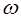
1) эксперимент ўтказилиши натижасида 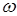
2) битта тажрибада факат битта элементар ходиса содир бўлади
деган
шартлар бажариладиган элементар ходисалар тўплами элементар ходисалар фазоси
деб аталади ва 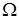
Шундай килиб, ихтиёрий тасодифий ходиса элементар ходисалар фазосининг кисм тўплами бўлади. Элементар ходисалар фазосининг таърифига асосан мукаррар ходисани оркали белгилаш мумкин. Мумкин бўлмаган ходиса оркали белгиланади.
1-мисол. Шашколтош ташланмокда. Ушбу экспериментга тўгри
келувчи элементар ходисалар фазоси 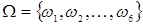
2-мисол. Кутида 2 та кизил, 3 та кўк ва 1 та ок, хаммаси бўлиб
6 та шар бўлсин. Эксперимент кутидан таваккалига шарларни олишдан иборат. Ушбу
экспериментга тўгри келувчи элементар ходисалар фазоси 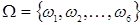 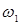 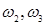 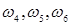
А — ок шарнинг чикиши;
В — кизил шарнинг чикиши;
С — кўк шарнинг чикиши;
D — рангли (ок бўлмаган) шарнинг чикиши.
Бу ерда кўриниб турибдики, бу ходисаларнинг хар бири у ёки бу имкон даражасига эга: баъзилари – кўпрок, бошкалари – камрок. Шубхасиз, В ходисанинг имкон даражаси А ходисаникидан кўпрок; худди шундай С ники В никидан, D ники эса С никидан кўпрок. Ходисаларни имкон даражалари бўйича микдорий томондан таккослаш учун, шубхасиз, хар бир ходиса билан маълум бир сонни боглаш зарур. Бу сон ходиса канчалик имкониятлирок бўлса, шунчалик каттарок бўлади.
Бу сонни 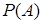
Элементар ходисалар фазоси чекли тўплам
бўлсин ва унинг
элементлари 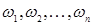
А ходисанинг эхтимоллиги
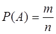
формула билан аникланади, бу ерда m — А ходисанинг рўй беришига кулайлик тугдирувчи элементар ходисалар сони, n – га кирувчи барча элементар ходисалар сони.
Агар 1-мисолда А оркали жуфт томон тушиши ходисаси
белгиланса, у холда 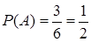
2-мисолда ходисаларнинг эхтимолликлари
куйидаги кийматларга эга: 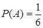 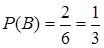 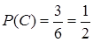 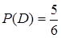
Эхтимолликнинг таърифидан унинг куйидаги хоссалари келиб чикади:
1. Мукаррар ходисанинг эхтимоллиги бирга тенг.
Хакикатан, агар ходиса мукаррар бўлса, у холда барча элементар ходисалар унинг рўй беришига кулайлик тугдиради. Бу холда m=n, бинобарин
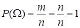
2. Мумкин бўлмаган ходисанинг эхтимоллиги нолга тенг.
Хакикатан, мумкин бўлмаган ходисанинг рўй бериши учун бирорта хам элементар ходиса кулайлик тугдирмайди. Бу холда m=0, бинобарин
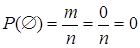
3. Тасодифий ходисанинг эхтимоллиги ноль билан бир орасидаги мусбат сондир.
Хакикатан, тасодифий ходисанинг
рўй беришига элементар ходисаларнинг факат бир кисми кулайлик тугдиради. Бу холда
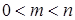 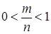
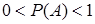
Шундай килиб, ихтиёрий ходисанинг эхтимоллиги
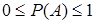
тенгсизликларни каноатлантиради
Ходисанинг нисбий частотаси деб ходиса рўй берган тажрибалар сонининг аслида ўтказилган жами тажрибалар сонига нисбатига айтилади.
Шундай килиб, А ходисанинг нисбий частотаси
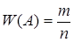
формула билан аникланади, бу ерда т — ходисанинг рўй беришлари сони, п — жами тажрибалар сони.
Эхтимоллик ва нисбий частотанинг таърифларини солиштириб, куйидаги хулосага келамиз: эхтимолликнинг таърифида тажрибалар хакикатан ўтказилганлиги талаб килинмайди; нисбий частотанинг таърифида эса тажрибалар аслида ўтказилганлиги фараз килинади.
3-мисол. Тасодифий
танланган 80 та бир хил деталдан 3 таси яроксиз эканлиги аникланди. Яроксиз
деталларнинг нисбий частотаси 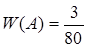
4-мисол. Бир йил давомида объектларнинг бирида 24 та текширув
ўтказилди, бунда 19 марта конунчиликнинг бузилишлари кайд этилди. Конунчилик
бузилишларининг нисбий частотаси 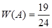
Узок кузатишлар шуни кўрсатадики, агар бир хил шарт-шароитларда тажрибалар ўтказилиб, уларнинг хар бирида тажрибалар сони етарлича катта бўлса, у холда нисбий частота жуда оз (тажрибалар канча кўп ўтказилган бўлса, шунча кам) ўзгариб, бирор ўзгармас сон атрофида тебранади. Бу ўзгармас сон ходисанинг рўй бериш эхтимоллиги экан.
Шундай килиб, агар тажриба йўли билан нисбий частота аникланган бўлса, у холда уни эхтимолликнинг такрибий киймати сифатида олиш мумкин. Бу эхтимолликнинг статистик таърифидир.
Хотимада эхтимолликнинг геометрик таърифини кўриб чикайлик.
Агар элементар ходисалар фазоси ни текислик ёки фазодаги кандайдир бир соха, А ни эса унинг кисм тўплами деб карайдиган бўлсак, у холда А ходисанинг эхтимоллиги А ва нинг юзалари ёки хажмлари нисбатида каралади хамда
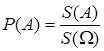
ва
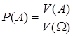
формулалар бўйича топилади.
Назорат учун саволлар:
1. Табиат ва жамият конунлари сабабий богланишларнинг намоён бўлиш шакли бўйича кандай синфларга бўлинади?
2. Ходисаларни кандай турларга бўлиш мумкин?
3. Эхтимоллар назариясининг предмети нима?
4. Эхтимоллар назарияси ривожланиши тарихи хакида нималарни биласиз?
5. Эхтимоллар назариясининг иктисодий, техник масалалар учун ахамияти кандай?
6. Эксперимент, тажриба, элементар ходиса ва ходиса нима, улар кандай белгиланади?
7. Элементар ходисалар фазоси деб нимага айтилади?
8. Ходисанинг эхтимоллиги кандай аникланади?
9. Эхтимолликнинг кайси хоссаларини биласиз?
10. Ходисанинг нисбий частотаси хакида нима биласиз?
11. Эхтимолликнинг статистик таърифининг мохияти нимада?
12. Эхтимолликнинг геометрик таърифи канака?